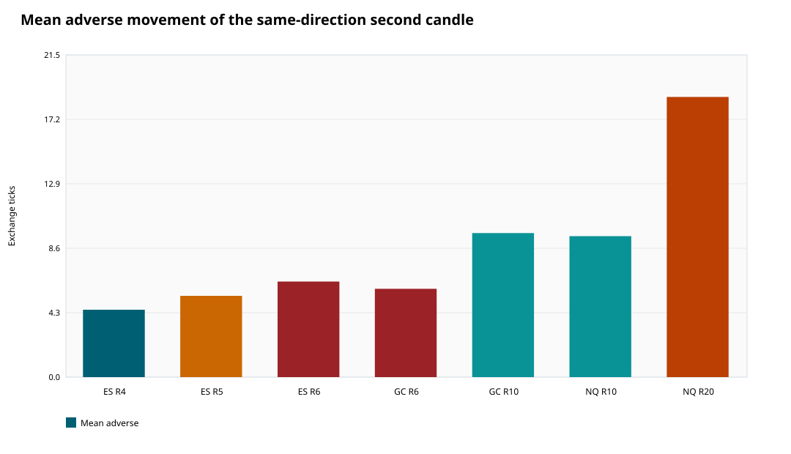
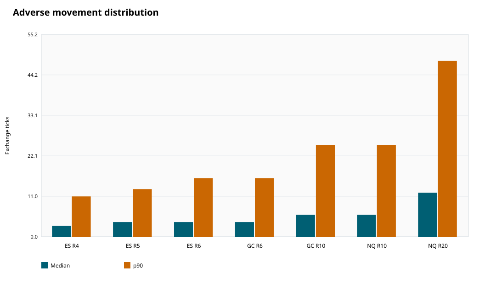
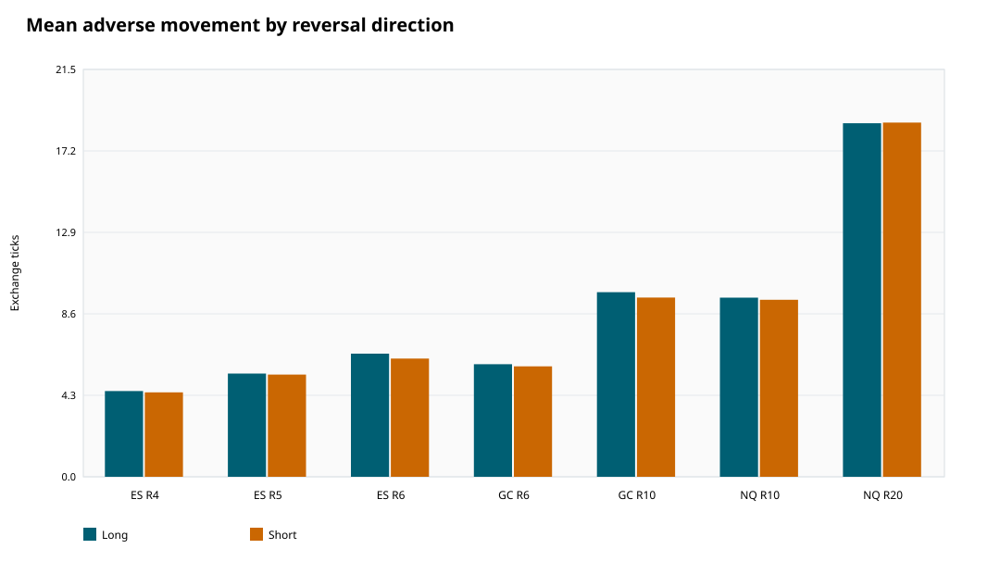
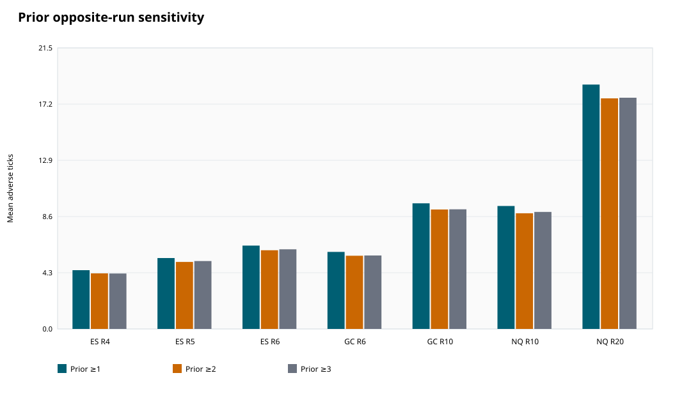
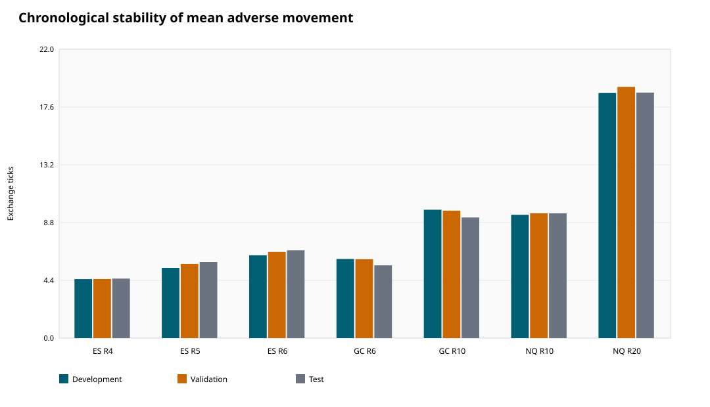
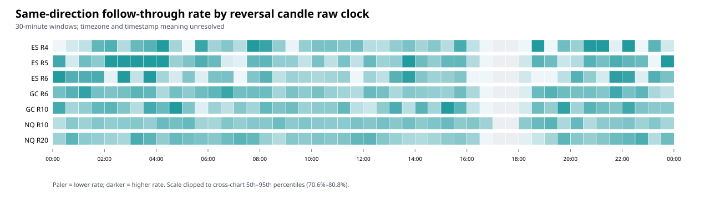

Conditional bar-geometry analysis; not an executable strategy or profit estimate.
| asset | range_setting | total_reversals | same_direction_next_bar | same_direction_probability | mean_adverse_ticks | mean_adverse_ci_low_ticks | mean_adverse_ci_high_ticks | median_adverse_ticks | p90_adverse_ticks | mean_adverse_price | mean_adverse_gross_dollars |
|---|---|---|---|---|---|---|---|---|---|---|---|
| ES | 4 | 16771 | 12624 | 0.755 | 4.493 | 4.415 | 4.567 | 3.000 | 11.000 | 1.123 | 56.158 |
| ES | 5 | 11540 | 8689 | 0.755 | 5.425 | 5.310 | 5.550 | 4.000 | 13.000 | 1.356 | 67.808 |
| ES | 6 | 8425 | 6239 | 0.743 | 6.373 | 6.233 | 6.502 | 4.000 | 16.000 | 1.593 | 79.664 |
| GC | 6 | 47019 | 35666 | 0.759 | 5.889 | 5.769 | 6.012 | 4.000 | 16.000 | 0.589 | 58.891 |
| GC | 10 | 20603 | 15627 | 0.760 | 9.607 | 9.402 | 9.828 | 6.000 | 25.000 | 0.961 | 96.070 |
| NQ | 10 | 128421 | 97350 | 0.758 | 9.404 | 9.320 | 9.499 | 6.000 | 25.000 | 2.351 | 47.022 |
| NQ | 20 | 38909 | 29416 | 0.757 | 18.691 | 18.438 | 18.926 | 12.000 | 48.000 | 4.673 | 93.455 |






# Adverse movement of the second same-direction candle Run `20260906T_full_v4`. This analysis covers all seven available filename-labeled Range XV exports: ES 4/5/6, GC 6/10, and NQ 10/20. ## Definition The reversal is the first green/red candle after the opposite run. The immediately following candle is the **second same-direction candle including the reversal**. Results condition on that candle also closing in the reversal direction. The primary adverse movement is measured from that follow-through candle's own open: open-to-low for green/long and high-to-open for red/short. ## Full-period results | Chart | Reversals | Same-direction second candle | Conditional rate | Mean adverse ticks (95% block CI) | Median | p90 | Mean adverse price | Mean adverse gross $ | |---|---:|---:|---:|---:|---:|---:|---:|---:| | ES R4 | 16,771 | 12,624 | 75.46% | 4.49 (4.42–4.57) | 3.0 | 11.0 | 1.12 | $56.16 | | ES R5 | 11,540 | 8,689 | 75.52% | 5.42 (5.31–5.55) | 4.0 | 13.0 | 1.36 | $67.81 | | ES R6 | 8,425 | 6,239 | 74.30% | 6.37 (6.23–6.50) | 4.0 | 16.0 | 1.59 | $79.66 | | GC R6 | 47,019 | 35,666 | 75.91% | 5.89 (5.77–6.01) | 4.0 | 16.0 | 0.59 | $58.89 | | GC R10 | 20,603 | 15,627 | 75.97% | 9.61 (9.40–9.83) | 6.0 | 25.0 | 0.96 | $96.07 | | NQ R10 | 128,421 | 97,350 | 75.83% | 9.40 (9.32–9.50) | 6.0 | 25.0 | 2.35 | $47.02 | | NQ R20 | 38,909 | 29,416 | 75.67% | 18.69 (18.44–18.93) | 12.0 | 48.0 | 4.67 | $93.45 | The denominator for mean adverse movement is the number of same-direction second candles, not all reversals. The conditional rate column shows how frequently a reversal reached that cohort. Confidence intervals resample provisional export dates and account for within-date dependence. ## Chart-level summary - **ES R4:** mean adverse movement was 4.49 ticks (1.12 native price units; $56.16 gross), with median 3.0 and p90 11.0 ticks. The next candle closed in the reversal direction in 75.46% of eligible reversals (12,624/16,730). - **ES R5:** mean adverse movement was 5.42 ticks (1.36 native price units; $67.81 gross), with median 4.0 and p90 13.0 ticks. The next candle closed in the reversal direction in 75.52% of eligible reversals (8,689/11,505). - **ES R6:** mean adverse movement was 6.37 ticks (1.59 native price units; $79.66 gross), with median 4.0 and p90 16.0 ticks. The next candle closed in the reversal direction in 74.30% of eligible reversals (6,239/8,397). - **GC R6:** mean adverse movement was 5.89 ticks (0.59 native price units; $58.89 gross), with median 4.0 and p90 16.0 ticks. The next candle closed in the reversal direction in 75.91% of eligible reversals (35,666/46,984). - **GC R10:** mean adverse movement was 9.61 ticks (0.96 native price units; $96.07 gross), with median 6.0 and p90 25.0 ticks. The next candle closed in the reversal direction in 75.97% of eligible reversals (15,627/20,569). - **NQ R10:** mean adverse movement was 9.40 ticks (2.35 native price units; $47.02 gross), with median 6.0 and p90 25.0 ticks. The next candle closed in the reversal direction in 75.83% of eligible reversals (97,350/128,384). - **NQ R20:** mean adverse movement was 18.69 ticks (4.67 native price units; $93.45 gross), with median 12.0 and p90 48.0 ticks. The next candle closed in the reversal direction in 75.67% of eligible reversals (29,416/38,874). ## Three-or-more preceding opposite candles This sensitivity matches the example of at least three red candles followed by a green reversal, or vice versa. | Chart | Same-direction second candles | Conditional rate | Mean adverse ticks (95% block CI) | Median | p90 | |---|---:|---:|---:|---:|---:| | ES R4 | 6,057 | 74.69% | 4.24 (4.15–4.34) | 3.0 | 10.0 | | ES R5 | 4,130 | 74.01% | 5.19 (5.06–5.32) | 4.0 | 12.0 | | ES R6 | 2,915 | 73.04% | 6.09 (5.90–6.28) | 4.0 | 15.0 | | GC R6 | 17,441 | 74.40% | 5.62 (5.51–5.75) | 4.0 | 15.0 | | GC R10 | 7,718 | 74.88% | 9.15 (8.93–9.37) | 6.0 | 24.0 | | NQ R10 | 47,837 | 74.05% | 8.95 (8.84–9.06) | 6.0 | 24.0 | | NQ R20 | 14,505 | 74.34% | 17.69 (17.40–17.99) | 12.0 | 45.0 | The prior-run ≥3 cohort has slightly lower adverse movement than the all-reversal cohort in every chart, but the range-size ordering is unchanged. ## Reference-point sensitivity All values below are ticks. A positive directional opening gap means the second candle opened favorably relative to the reversal close. | Chart | Mean adverse from follow-through open | Mean adverse from reversal close | Mean directional opening gap | |---|---:|---:|---:| | ES R4 | 4.49 | 3.61 | 1.06 | | ES R5 | 5.42 | 4.52 | 1.05 | | ES R6 | 6.37 | 5.47 | 1.03 | | GC R6 | 5.89 | 4.61 | 2.02 | | GC R10 | 9.61 | 8.17 | 2.01 | | NQ R10 | 9.40 | 7.81 | 2.39 | | NQ R20 | 18.69 | 16.90 | 2.25 | ## Long versus short | Chart | Long/green mean adverse | Short/red mean adverse | |---|---:|---:| | ES R4 | 4.53 | 4.46 | | ES R5 | 5.45 | 5.40 | | ES R6 | 6.50 | 6.24 | | GC R6 | 5.94 | 5.83 | | GC R10 | 9.75 | 9.47 | | NQ R10 | 9.46 | 9.35 | | NQ R20 | 18.67 | 18.71 | Long/green and short/red means are close within every chart, so the combined-direction results are not being driven by only one reversal direction. ## Time of day: 30-minute raw-clock windows The files do not identify their timezone or whether a timestamp marks a bar's open or close, so these are **raw export-clock windows**, not ET or CT. Intervals are start-inclusive and end-exclusive. “Most frequent” is normalized as conditioned events per active export date; it is not just the largest raw count. Values in parentheses below are the winning metric: shares for rate, events/date for frequency, and ticks for movement. | Chart | Highest follow-through rate | Most frequent by reversal time | Lowest mean adverse | Highest mean favorable | Largest favorable−adverse | Most confirmations by follow-through time | |---|---|---|---|---|---|---| | ES R4 | 07:30–08:00 (83.88%) | 09:30–10:00 (22.63) | 07:30–08:00 (4.03) | 16:00–16:30 (5.41) | 07:30–08:00 (0.98) | 09:30–10:00 (22.72) | | ES R5 | 15:30–16:00 (77.57%) | 09:30–10:00 (15.10) | 11:30–12:00 (5.07) | 08:30–09:00 (6.28) | 11:30–12:00 (0.93) | 09:30–10:00 (15.30) | | ES R6 | 15:30–16:00 (76.00%) | 09:30–10:00 (11.23) | 11:30–12:00 (5.82) | 08:30–09:00 (7.18) | 11:30–12:00 (1.18) | 09:30–10:00 (11.28) | | GC R6 | 01:00–01:30 (79.93%) | 08:30–09:00 (37.38) | 01:00–01:30 (5.01) | 18:00–18:30 (9.38) | 01:00–01:30 (2.77) | 08:30–09:00 (37.27) | | GC R10 | 15:00–15:30 (83.02%) | 08:30–09:00 (17.58) | 01:00–01:30 (7.25) | 18:00–18:30 (13.63) | 01:00–01:30 (4.47) | 08:30–09:00 (17.63) | | NQ R10 | 19:00–19:30 (78.07%) | 09:30–10:00 (229.63) | 23:30–00:00 (8.69) | 18:00–18:30 (13.48) | 20:00–20:30 (3.85) | 09:30–10:00 (229.42) | | NQ R20 | 03:00–03:30 (78.82%) | 09:30–10:00 (67.87) | 16:30–17:00 (14.98) | 18:00–18:30 (23.52) | 16:30–17:00 (7.64) | 09:30–10:00 (67.70) | There is no single objectively “best” time: a window can be frequent but have more adverse movement, or have attractive geometry but fewer occurrences. The balanced shortlist below uses a transparent rule: among supported reversal-time windows, retain those at or above that chart's median follow-through rate and event frequency, require positive mean favorable-minus-adverse movement, then rank by favorable-minus-adverse movement. | Chart | Rank | Raw 30-minute window | Events | Active dates | Follow-through rate | Events/date | Mean adverse | Mean favorable | Favorable−adverse | |---|---:|---|---:|---:|---:|---:|---:|---:|---:| | ES R4 | 1 | 10:30–11:00 | 874 | 60 | 76.47% | 14.57 | 4.22 | 5.00 | 0.78 | | ES R4 | 2 | 10:00–10:30 | 1,108 | 60 | 76.36% | 18.47 | 4.41 | 5.00 | 0.59 | | ES R4 | 3 | 14:30–15:00 | 356 | 56 | 75.74% | 6.36 | 4.46 | 5.00 | 0.54 | | ES R5 | 1 | 10:00–10:30 | 774 | 60 | 76.41% | 12.90 | 5.52 | 6.00 | 0.48 | | ES R5 | 2 | 15:30–16:00 | 446 | 58 | 77.57% | 7.69 | 5.60 | 6.01 | 0.41 | | ES R5 | 3 | 08:30–09:00 | 288 | 59 | 75.20% | 4.88 | 5.97 | 6.28 | 0.32 | | ES R6 | 1 | 09:30–10:00 | 674 | 60 | 74.39% | 11.23 | 6.17 | 7.04 | 0.86 | | ES R6 | 2 | 10:30–11:00 | 437 | 60 | 74.32% | 7.28 | 6.32 | 7.00 | 0.68 | | ES R6 | 3 | 15:30–16:00 | 304 | 57 | 76.00% | 5.33 | 6.86 | 7.00 | 0.14 | | GC R6 | 1 | 22:30–23:00 | 781 | 60 | 77.87% | 13.02 | 5.16 | 7.90 | 2.74 | | GC R6 | 2 | 20:00–20:30 | 884 | 60 | 76.60% | 14.73 | 5.53 | 8.18 | 2.65 | | GC R6 | 3 | 20:30–21:00 | 766 | 60 | 76.75% | 12.77 | 5.52 | 7.82 | 2.30 | | GC R10 | 1 | 22:30–23:00 | 366 | 60 | 76.25% | 6.10 | 8.50 | 11.78 | 3.27 | | GC R10 | 2 | 01:30–02:00 | 434 | 60 | 77.64% | 7.23 | 8.71 | 11.77 | 3.06 | | GC R10 | 3 | 21:00–21:30 | 777 | 60 | 76.85% | 12.95 | 9.15 | 11.97 | 2.83 | | NQ R10 | 1 | 20:00–20:30 | 2,460 | 60 | 77.36% | 41.00 | 8.94 | 12.79 | 3.85 | | NQ R10 | 2 | 04:00–04:30 | 1,685 | 60 | 77.22% | 28.08 | 8.94 | 12.72 | 3.77 | | NQ R10 | 3 | 21:30–22:00 | 1,347 | 60 | 75.80% | 22.45 | 9.20 | 12.58 | 3.38 | | NQ R20 | 1 | 21:30–22:00 | 442 | 60 | 77.14% | 7.37 | 16.75 | 22.07 | 5.32 | | NQ R20 | 2 | 21:00–21:30 | 513 | 60 | 75.89% | 8.55 | 17.55 | 22.12 | 4.56 | | NQ R20 | 3 | 10:00–10:30 | 2,798 | 60 | 76.20% | 46.63 | 18.45 | 21.92 | 3.47 | These rankings are descriptive selections from the same sample, not out-of-sample timing rules. The full tables preserve every half-hour, including low-activity and inactive windows. The confirmation-time table is the appropriate reference for when the follow-through condition becomes observable. ## Interpretation Larger range settings generally allow larger adverse movement inside the second candle. The result should therefore be compared in ticks, native price, and dollars—not raw points across assets. The separate long/short table checks directional symmetry, and the prior-run table shows whether the three-opposite-candle example differs from the all-reversal cohort. This is a conditional bar-geometry estimate. Selecting only second candles that ultimately close in the reversal direction uses their close to define the cohort; it is not a real-time entry filter and does not establish profitability. The signal-close sensitivity can differ from the own-open result because Range XV bars may open away from the reversal close. ## Outputs - [All summary slices](tables/all_summary.csv) - [Headline all-reversal results](tables/headline.csv) - [Long and short results](tables/long_short.csv) - [Prior-run sensitivity](tables/prior_run_sensitivity.csv) - [Chronological stability](tables/chronological_stability.csv) - [Independent real-event reconciliation](tables/manual_reconciliation.csv) - [All 30-minute reversal-time windows](tables/time_of_day_signal_30min.csv) - [All 30-minute confirmation-time windows](tables/time_of_day_confirmation_30min.csv) - [Top three windows by criterion](tables/time_of_day_rankings_30min.csv) - [Balanced supported windows](tables/time_of_day_balanced_windows_30min.csv) - [Methodology](methodology.md) - [Data quality](data_quality.md) - [Run manifest](run_manifest.json) Figures: [mean adverse movement](figures/mean_adverse.svg), [median and p90](figures/adverse_distribution.svg), [long versus short](figures/long_short.svg), [prior-run sensitivity](figures/prior_run_sensitivity.svg), [chronological stability](figures/chronological_stability.svg), and [30-minute follow-through-rate heatmap](figures/time_of_day_followthrough_rate.svg).